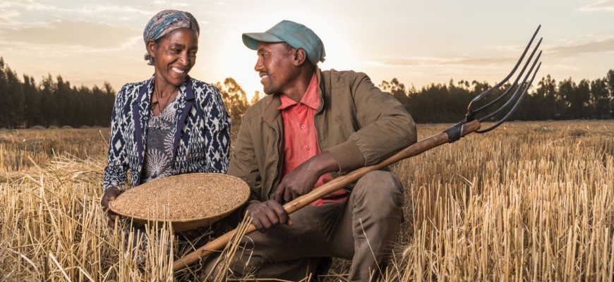

Just give us a moment to see what we're doing 💡
GebereNet is an emerging platform designed to support Ethiopia’s agricultural community. It connects farmers, organizations, and businesses working in the agriculture sector by offering space to collaborate, share knowledge, and grow together. The platform highlights the importance of partnerships across all levels—local growers to international stakeholders.
Key Actors
GebereNet emphasizes structured engagement among key actors in agriculture. It features:
- Farmers who drive production on the ground
- Investors providing financial backing to scale innovations
- Exporters ensuring Ethiopia’s products reach global markets.
This categorization reflects the supply chain from field to international trade.
Farmers in Action
Visuals of farmers are showcased, including a husband and wife working together on the farm.
These images celebrate the dedication of Ethiopia’s farming communities, showing both teamwork and tradition in agricultural practices.
Image Credit: GIZ
Call for Collaborations
Join the movement—GebereNet is calling on agricultural innovators, local farmers, development practitioners, and global stakeholders to come together. This emerging platform is more than just a network; it’s a growing community rooted in knowledge exchange, inclusive partnerships, and sustainable impact. Whether you're cultivating crops or shaping policy, your insight matters. Collaborate, share, and thrive with GebereNet—because Ethiopia’s agricultural future is stronger when we build it together.
Join the movement—GebereNet is calling on agricultural innovators, local farmers, development practitioners, and global stakeholders to come together. This emerging platform is more than just a network; it’s a growing community rooted in knowledge exchange, inclusive partnerships, and sustainable impact. Whether you're cultivating crops or shaping policy, your insight matters. Collaborate, share, and thrive with GebereNet—because Ethiopia’s agricultural future is stronger when we build it together.
Testimonials
- Join the movement—GebereNet
- Join the movement—GebereNet
- Join the movement—GebereNet
- Join the movement—GebereNet
- Join the movement—GebereNet
- Join the movement—GebereNet
- Join the movement—GebereNet
To explore available services, visit GebereNet